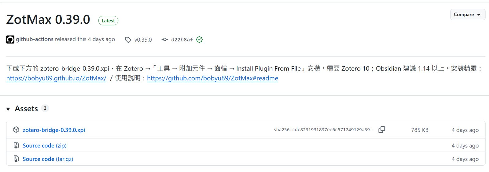
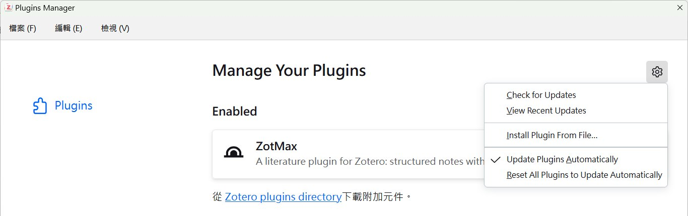
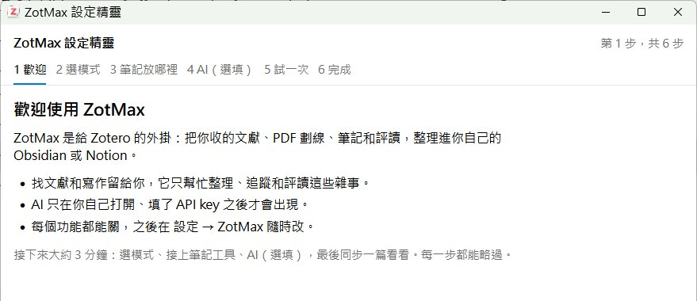
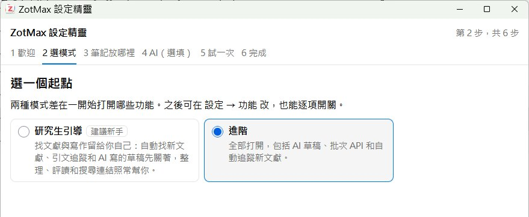
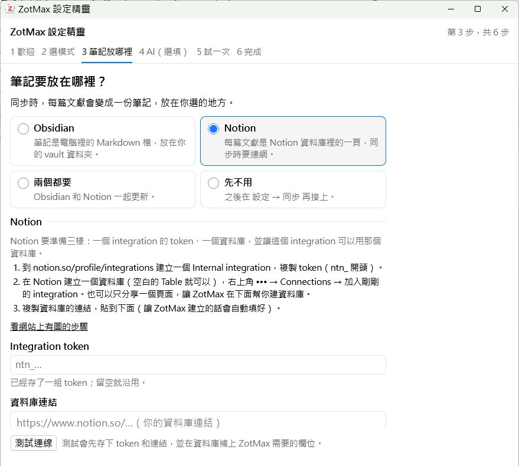
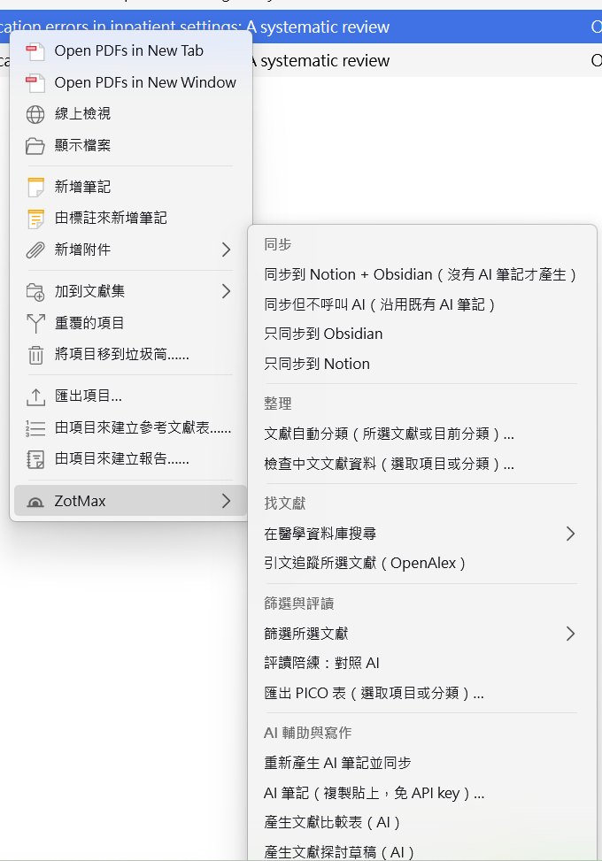
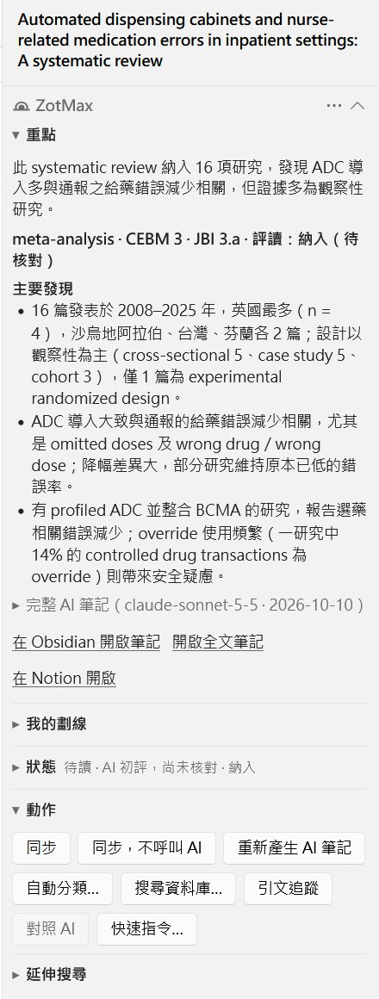
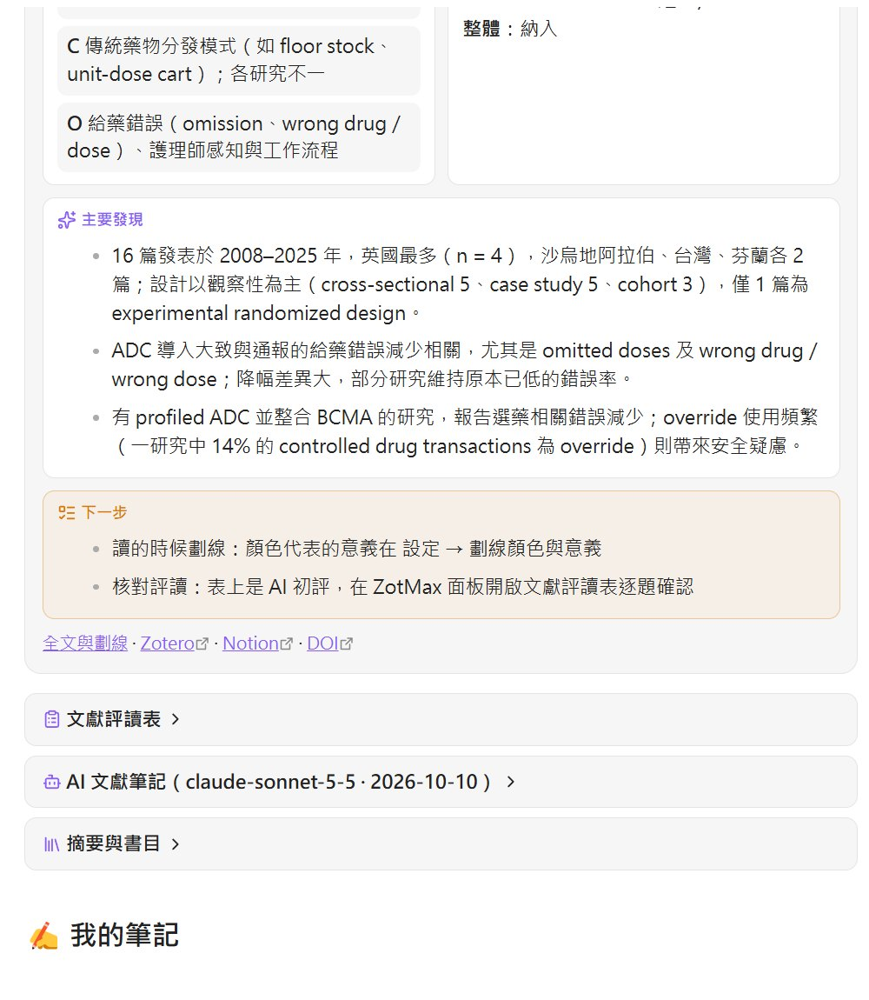
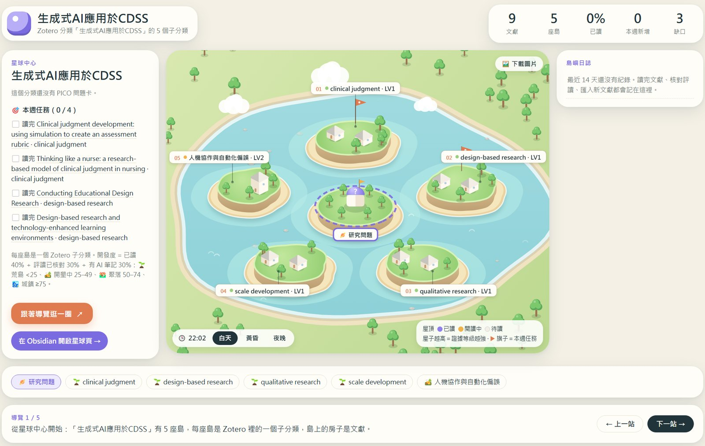

開始前：你需要什麼
ZotMax 本身不存文獻，它是一座「橋」：從 Zotero 讀出文獻，整理後寫進 Obsidian 或 Notion。三個軟體各用一句話認識：
| 軟體 | 像什麼 | 要不要裝 |
|---|---|---|
| Zotero 10 | 收文獻的書櫃：存書目和 PDF、畫重點、產生引用格式 | 一定要（免費） |
| Obsidian | 存在自己電腦裡的筆記本，筆記是一般文字檔 | 和 Notion 至少選一個（免費，建議 1.14 以上） |
| Notion | 線上的資料庫，每篇文獻一頁，手機也能看 | 和 Obsidian 至少選一個（個人免費） |
Obsidian 還是 Notion？
選 Obsidian，如果你…
希望資料留在自己電腦；想要首頁、主題頁、證據地圖、星球與群島地圖這些視覺化功能（ZotMax 的大部分新功能都在 Obsidian 上）。
選 Notion，如果你…
已經習慣 Notion；想在手機或平板上看、和同學分享；喜歡表格、篩選、排序。
先選 Obsidian。之後想加 Notion，隨時可以在設定裡接上，兩個可以同時用。
安裝 Zotero 10
- 到 zotero.org/download 下載安裝檔，一路按「下一步」裝好。
- 已經有 Zotero 的人，打開 Zotero →「說明」→「關於 Zotero」，確認版本是 10 開頭。ZotMax 只支援 Zotero 10。
- 建議順便裝瀏覽器外掛 Zotero Connector，在 PubMed 或期刊網站按一下就能存文獻和 PDF。
網站上的「Zotero 新手任務」兩支影片和簡報，會教你收文獻、畫重點、在 Word 插入引用。
準備 Obsidian 或 Notion
A. 用 Obsidian
- 到 obsidian.md 下載安裝（免費）。
- 第一次打開時按「建立新的儲存庫」（vault），取個名字，例如「文獻庫」，放在你找得到的地方（例如桌面或文件）。
- 記住這個資料夾的位置，第 5 步的設定精靈會請你選它。
就是一個資料夾。Obsidian 把裡面的每個 .md 檔當成一則筆記；ZotMax 會在裡面建一個 Zotero 子資料夾放文獻筆記。
B. 用 Notion
Notion 需要先讓 ZotMax「有權限」寫入，所以多三個小步驟：
- 到 notion.so/profile/integrations 建立一個 Internal integration（名字隨意，例如「ZotMax」），複製它的 token（
ntn_開頭）。 - 在 Notion 新增一個頁面，例如「碩論文獻」。打開它，右上角
⋯→ Connections（連結）→ 選剛剛建的 integration。 - 資料庫不用自己建：第 5 步的設定精靈可以按 找可以放資料庫的頁面 → 選「碩論文獻」→ 在這個頁面建立資料庫，欄位會全部自動建好。
不要貼到群組或截圖給別人。ZotMax 會把它存在 Zotero 的密碼管理員，不會寫進設定檔。
下載 ZotMax（.xpi 檔）
- 打開 GitHub 的最新版頁面。
- 在 Assets 下面，點
zotero-bridge-0.39.0.xpi（版本號會跟著更新）。
檔名是舊名 zotero-bridge，是同一個外掛，放心下載。

直接點連結時，Firefox 會把 .xpi 當成自己的擴充功能。請在連結上按右鍵 →「另存連結」。用 Chrome、Edge 直接點就好。
把外掛裝進 Zotero
- Zotero 上方選單：工具 → 附加元件（英文介面：Tools → Plugins）。
- 右上角的 齒輪 → Install Plugin From File…。
- 選剛剛下載的 .xpi，按開啟。清單裡出現 ZotMax 就裝好了。

之後有新版，Zotero 會自動更新 ZotMax，不用再下載。
跟著設定精靈走
精靈一共 6 步。每一步按「下一步」才會存，按「略過」或「上一步」什麼都不改；中途按 Esc 關掉，已經存的設定會留著。


② 研究生引導 vs. 進階
- 研究生引導（建議新手）：自動找新文獻、引文追蹤和 AI 寫草稿的功能先關著；整理、評讀、搜尋照常能用。
- 進階：全部打開，包括 AI 草稿、批次 API、主題搜尋機器人。熟悉後再到 設定 → ZotMax → 功能 打開。
③ 筆記放哪裡


④ AI（選填）

⑤ 試一次、⑥ 完成
- 試一次：用你選的文獻（沒選就用清單第一篇）同步一次。不呼叫 AI、不花錢，完成後會告訴你筆記寫到哪裡，可以直接「在 Obsidian 開啟」。
- 完成：告訴你工具列按鈕、右側面板、快速指令和設定頁在哪裡。
按 Ctrl+Shift+P（Mac：⇧⌘P）打開快速指令，搜尋「設定精靈」。
選 AI 怎麼用（可以先跳過）
AI 會替每篇文獻寫一份研讀筆記：研究設計、樣本、PICO、證據等級、評讀初稿。不用 AI，其他功能都照常可用。
| 你的情況 | 選 | 費用 |
|---|---|---|
| 不會申請 API key；或已經有 ChatGPT、Claude、Gemini（免費或訂閱）、學校的 AI | 網頁版 AI（複製貼上） | 不用另外付費 |
| 想同步時自動產生，但不想花錢 | OpenRouter 免費模型（Google 帳號註冊，不用信用卡） | 免費，沒儲值時每天約 50 篇 |
| 要穩定的品質，或一次很多篇 | Claude 或 OpenAI 的 API key | 依用量計費；超過 5 篇會先確認 |
| 先不用 | 「先不用 AI」 | 不花錢 |
ChatGPT Plus、Claude Pro 這類月費訂閱，不能當成 API key 填進去；但可以用下面的「網頁版 AI」。
網頁版 AI：免 API key，三步驟


- 按 複製提示詞（含全文）。太長或是掃描版 PDF 時，改按「只複製指令」，在 AI 網站自己附上 PDF。
- 按 開啟 ChatGPT／Claude／Gemini（或打開學校的 AI），貼上送出。寫完後用回答下面的「複製」按鈕複製。
- 貼回視窗，下方會即時檢查格式。沒問題就按 儲存 AI 筆記並同步。
全文會送到你選的 AI 網站。含病人資料或未發表的資料，請先確認醫院、學校的規定，必要時先去識別化；免費方案的內容可能被拿去訓練模型。
第一次同步
- 在 Zotero 的文獻清單選幾篇（第一次建議 3–5 篇）。
- 按清單上方工具列（「新增筆記」右邊）的 ZotMax 按鈕（橋形圖示）。
- 選 同步到 Notion + Obsidian。只想更新、不想花 AI 費用就選「同步但不呼叫 AI」。


找不到功能？三個入口
- 工具列按鈕：文獻清單上方的 ZotMax 按鈕。
- 右鍵：在文獻或分類上按右鍵 → ZotMax ▸。
- 快速指令：Ctrl+Shift+P，打字找功能，中英文都可以（例如「PRISMA」「評讀」「sync」）。
看結果
Obsidian
打開 vault 裡的 Zotero/00 首頁（舊版資料夾結構是 Zotero/首頁）。「▶️ 從這裡開始」告訴你下一篇讀哪篇、哪些評讀還沒核對。點任一篇，就是那篇的文獻筆記。


在 Obsidian 的 設定 → 外觀 → CSS 片段，按重新整理，確認 zotmax 是打開的。沒有的話，到 Zotero → 設定 → ZotMax → 同步 → Obsidian，按 安裝看板樣式到 Obsidian。
Notion
資料庫裡每篇文獻一頁；閱讀狀態、研究設計、證據等級、評讀結果都是欄位，可以排序、篩選、改成看板。欄位可以改名，但不要刪除或改類型。
不會。ZotMax 只更新它自己產生的區塊；你寫在「✍️ 我的筆記」的內容都會留著。
Word 的中文 APA 引用
Zotero 官方的 APA 樣式會把中文文獻變成「陳, 美., & 林, 小. (2023)」。ZotMax 附兩個中英混排樣式：中文用中文 APA 7，英文維持官方 APA 7。
- ZotMax 按鈕或快速指令 → 安裝 Word 中文 APA 樣式。
- 用 檢查中文文獻資料… 整理中文文獻，最重要的是 語言欄要是
zh-TW，語言不對就會用英文規則。 - Word → Zotero 分頁 → Document Preferences → 選「APA 7 中英混排（臺灣，ZotMax）」或「臺灣護理學會」版 → OK → Refresh。
- 中文變成方框 □：Word 的「書目」樣式 → 字型 → 亞洲文字字型設成新細明體或標楷體。
| 中文文獻 | 英文文獻 | |
|---|---|---|
| 參考文獻 | 陳美玲、林小華（2023）。題目。護理雜誌，70(2)，45–56。 | Lee, A., & Smith, J. (2021). Title. Journal, 12(3), 100–110. |
| 內文 | (陳美玲、林小華，2023)、(王大明等，2021) | (Lee et al., 2021) |
星球與群島地圖
一個研究主題是一顆星球，它的 Zotero 子分類是一座座島。讀得越多、評讀核對越多，島就從 🌱 荒島長成 🏙️ 城鎮；每週一，ZotMax 會從最需要開墾的島挑 2–4 件「本週任務」，做完自動打勾。
- 分類有兩個以上的子分類，就自動變成星球。
- 還沒有子分類？在分類上按右鍵 → ZotMax ▸ 建造星球：把這個分類分成島…，勾選、改名後確定（不滿意可以「復原上次建造星球」）。
- 在分類上按右鍵 → ZotMax ▸ 開啟群島地圖，用瀏覽器打開；右上角可以下載圖片，放進投影片和指導教授討論。

常見問題與疑難排解
沒有 API key 可以用嗎？
可以。同步、閱讀狀態、評讀表、篩選與 PRISMA、儀表板、搜尋連結都不需要 AI。AI 文獻筆記也可以用「網頁版 AI」複製貼上，或 OpenRouter 的免費模型。
選單裡找不到某個功能？
先到 設定 → ZotMax → 功能，看開關是不是關著（研究生引導模式有些功能預設關閉）。找重複、PRISMA、評讀總表要先在左側選一個分類；其他功能要先選文獻。
更新後 Obsidian 的筆記還是舊樣子？
版面在下次同步時才會換。先在 Zotero 對文獻「同步但不呼叫 AI」一次；首頁和儀表板可以用 ZotMax 按鈕 → 更新研究儀表板。卡片沒排成格狀，看第 8 步的 CSS 片段說明。
AI 筆記看起來只讀了摘要？
多半是掃描版 PDF（沒有文字層）或沒有 PDF。先用 OCR 讓 PDF 有文字，再「重新產生 AI 筆記」。
同步到一半想停，或 Zotero 當掉了？
工具 → 停止 ZotMax 同步；之後選 繼續未完成的 ZotMax 同步，失敗的會一起重試。
舊版升級上來，資料夾結構不一樣？
0.22 以前同步的 vault 會維持原本的平鋪結構，不會自己搬。準備好時用快速指令 → 整理 Obsidian 資料夾結構…，會先列出要搬幾個檔案，按確定才搬（建議先關閉 Obsidian）。不想換就維持「舊版平鋪」。
可以在 iPad 上看嗎？
可以。筆記在電腦產生，平板負責看：用 Obsidian Sync、iCloud，或直接用 Notion app。PDF 劃線可以用 Zotero 官方 iPad app，會同步回電腦。
Zotero 出新的大版本後外掛被停用？
ZotMax 宣告支援到 Zotero 10.x。Zotero 11 推出時會先停用，確認相容後會自動恢復，不用重裝。
資料安全嗎？會被送到哪裡？
API key 和 Notion token 存在 Zotero 的密碼管理員。只有你打開 AI 功能而且有 key 時，才會把書目、摘要、全文送給 AI；自動同步不呼叫 AI。用網頁版 AI 時，外掛什麼都不送，是你自己貼到網站。群島地圖打開時完全不連網。
出錯了去哪裡問？
進度視窗會列出每一篇的結果。仍然有問題，用快速指令「回報問題…」，或到 GitHub Issues 回報。